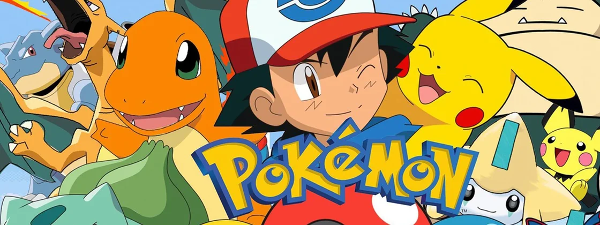

Olá treinador(a) , seja bem-vindo(a) ao Pokébox, seu site mais completo sobre Pokémon.

Sobre o Pokébox:
O Pokébox é um website feito para os fãs de pokémon. Aqui você encontra informações sobre cada um dos 251 pokémons, historia do anime e sobre jogo pokémonGO. Você também consegue filtrar os pokémons de acordo com a sua busca, por exemplo: Filtrar por ordem alfabética (a-z ou z-a), pesquisar pelo nomes e ou tipos dos Pokémons.
Foram encontrados 251 tipos de pokemons
Sobre o Anime
Assista aqui: TV Pokémon
Pokémon é uma série de anime, parte da franquia de mídia Pokémon da The Pokémon Company, que estreou na TV Tokyo em 1º de abril de 1997,criada pelo ator Satoshi Tajiri.
A franquia de anime consiste em oito séries sequenciais no Japão, cada uma baseada em uma parcela principal da série de jogos eletrônicos Pokémon.
Nas transmissões internacionais, essas sete séries são divididas em 25 temporadas, com a 25ª temporada, Jornadas Supremas, sendo transmitida pela Netflix no Brasil (com episódios adicionais a serem lançados trimestralmente).
O Anime originalmente seguiu Ash Ketchum, um jovem treinador de criaturas fictícias chamadas Pokémon. Acompanhado por seu parceiro Pikachu e um elenco rotativo de personagens humanos, Ash embarca em uma jornada para se tornar um "Mestre Pokémon", viajando pelas várias regiões do mundo e competindo em vários torneios de batalha conhecidos como Liga Pokémon. No entanto, na 26ª temporada Pokemon Horizontes – A Série, um novo elenco é apresentado, com novos protagonistas Liko e Roy.
PokémonGo

Acesse aqui: Pokemon GO
PokémonGO é um jogo eletrônico de realidade aumentada voltado para smartphones, que permite aos jogadores capturar, batalhar e treinar criaturas virtuais chamadas de Pokémon. O jogo tem como estímulo e intuito tornar os nossos jogadores ainda mais ativos no mundo real.
Ao jogar Pokémon GO o usuário interage com um mapa baseado no mundo real (inicialmente o Google Maps e atualmente o OpenStreetMap). O jogador se localiza e procura Pokémon por meio desse mapa. À medida que ele se desloca, o aplicativo vibra para avisar sobre a presença das criaturas virtuais pelo caminho.
Ao tocar a tela do smartphone é possível visualizar o Pokémon no mesmo local onde o jogador está, pois, o jogo sobrepõe à visualização da câmara a imagem do Pokémon e simula que ele está no local onde o jogador se encontra, semelhantemente à realidade virtual. Para capturar o monstrinho, basta arremessar uma Pokébola. Daí em diante, além de tentar pegar todos os tipos diferentes Pokémon, ao atingir o nível 5 do jogo é possível dominar os diversos ginásios espalhados pela cidade.